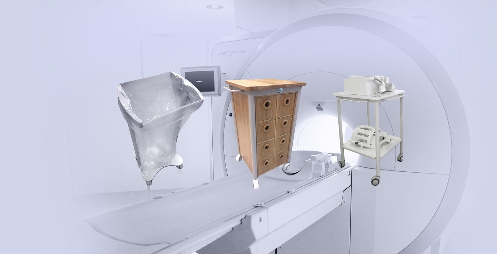

Företaget T-line tillverkar MR-kompatibla möbler och hjälpmedel till sjukhus.
Företaget drivs av Thomas Karlsson som har levererat MR-kompatibla möbler i mer än 20 år.

Referenser
Bland de företag som anlitat T-line märks Philips, Siemens och General Electric. Landsting och sjukhus köper utrustning direkt från T-line.